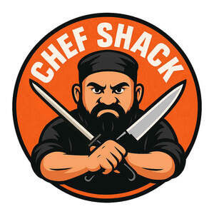

Trade Mark Journal No.2026/009 27 February 2026
UK00004327497 21 January 2026 (29,30,32,35,39,43)

- Class 29
- Fruit-based snack food; Snack food (Fruit-based -); Meat-based snack food; Fish-based snack food; Vegetable-based snack food; Milk drinks; Seaweed-based snack food; Yogurt drinks; Yoghurt drinks; Tofu-based snack food; Casseroles [food]; Soy-based food bars; Jellies for food; Flavoured milk drinks; Milk beverages.
- Class 30
- Flavourings of tea for food or beverages; Snack food (Cereal-based -); Rice-based snack food; Snack food (Rice-based -); Chocolate food beverages not being dairy-based or vegetable based; Malt-based food preparations; Drinks prepared from chocolate; Edible gold for decorating food and beverages; Honey [for food].
- Class 32
- Vegetable drinks; Fruit drinks; Energy drinks; Juice drinks; Sports drinks; Frozen fruit drinks; Frozen fruit-based drinks; Smoothies [non-alcoholic fruit beverages]; Carbonated non-alcoholic drinks; Fruit flavored drinks; Fruit beverages (non-alcoholic); Fruit flavoured drinks.
- Class 35
- Retail services in relation to alcoholic beverages (except beer); Online ordering services; Advertising the goods and services of online vendors via a searchable online guide; On-line ordering services in the field of restaurant take-out and delivery; Online retail store services in relation to clothing; Online ordering services in the field of restaurant take-out and delivery.
- Class 39
- Delivery of food and drink prepared for consumption; Delivery of hampers containing food and drink; Transportation of food; Packaging of food.
- Class 43
- Catering of food and drinks; Serving food and drinks; Food and drink catering; Catering of food and drink; Catering (Food and drink -); Preparation of food and drink; Providing food and drink; Providing of food and drink; Take-away food and drink services; Takeaway food and drink services; Provision of food and drink in restaurants; Preparation of food and beverages; Provision of food and drink; Serving food and drink for guests; Serving food and drink for guests in restaurants; Hospitality services [food and drink]; Food and drink catering for banquets; Providing food and beverages; Providing food and drink in bistros; Provision of food and beverages; Food and drink catering for cocktail parties; Providing food and drink for guests in restaurants; Providing food and drink for guests; Services for the preparation of food and drink; Food and drink preparation services; Serving food and drink in restaurants and bars; Catering for the provision of food and drink; Food and drink catering for institutions; Providing food and drink in restaurants and bars; Serving food and drink in doughnut shops; Catering for the provision of food and beverages; Providing food and drink in doughnut shops; Serving food and drink in Internet cafes; Services for providing food and drink; Corporate hospitality (provision of food and drink); Services for the provision of food and drink; Providing food and drink in Internet cafes; Catering services for the provision of food and drink; Arranging of wedding receptions [food and drink]; Food reviewing services [provision of information about food and drinks]; Club services for the provision of food and drink; Take away food and drink services; Fast food restaurants; Take-away food services; Preparation and provision of food and drink for immediate consumption.
NIDAR GLOBAL KITCHEN & PUB LIMITED